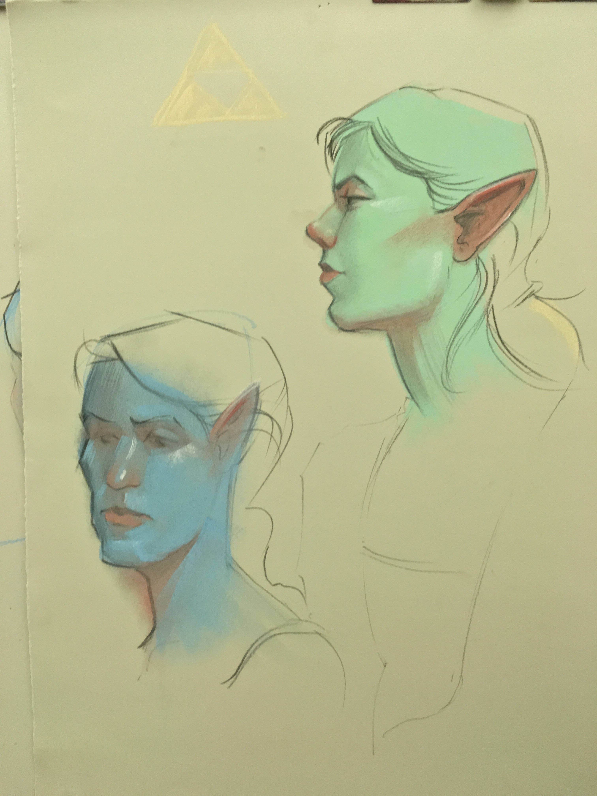
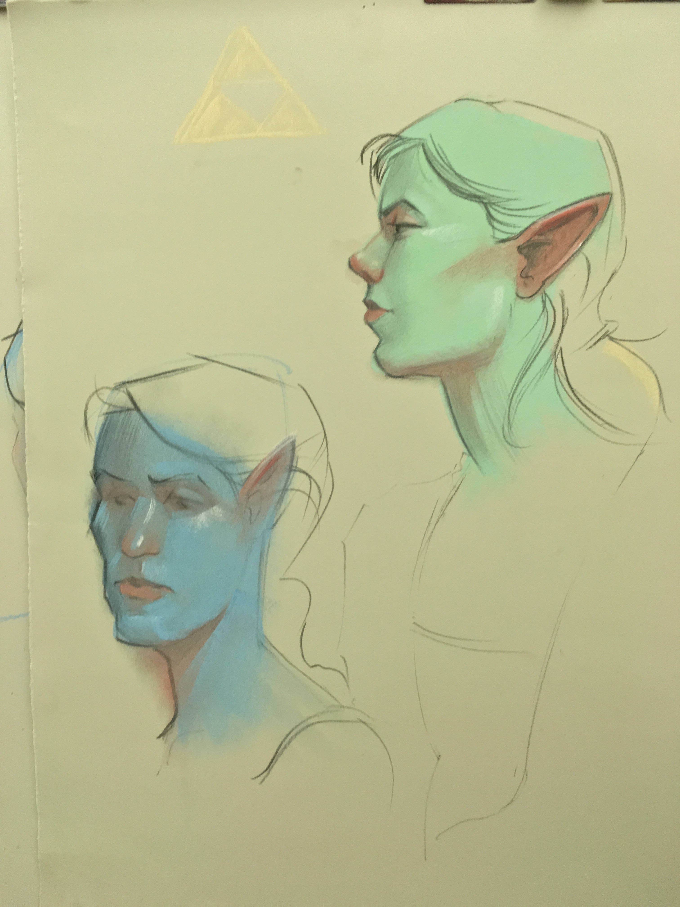

I have always been interested in learning about different creative endeavors as I'm always looking for new ways to express myself. I've learned skils in graphic design, user experience design, web development, illustration, screenprinting, photography, modeling, lighting/set design, costumery, and many others.

Graphic design work:
I completed most of my graphic design work as an undergraduate in Introduction to Typography and Introduction to Graphic Design. In these courses, I became comfortable and curious with the Adobe products of InDesign, Photoshop, and Illustrator.

Professional shoots:


Self-shot:


My favourite medium to express myself in is figure modeling. I have worked as a paid figure model since December 2014 for private artists and since January 2015 for professional institutions. I appreciate artists that invite my personality and experience to the session.
Selected works from figure modeling

 
